A telltale-inspired story game about making choices that'll effect your character and those around you, play as Carl on his journey on revenge against his former best friend. Be vengeful or merciful, kill or spare, the choice is yours!'
Below is my Development Process where I post updates about the game, these will come out much slower than most of my other project but will be extremely long compared to others
I neglected making this first devlog for a very long time, I just didn't believe I had enough content to show, but I think me and my team ended up going far past the point at which we had enough to show, and after about half a year, I think I finally have enough to show, probably even more
I, along with two of my friends, started this project at the beginning of my Junior Year of college, so the end of August 2025. As of this post, it is currently JANUARY 2026, and I believe we've made significant system progress thus far! For a brief summary, this game is a story-driven game inspiring by some popular Telltale titles like The Walking Dead, Tales from the Boarderlands, Wolf Among Us, and more, it features a mix of cinematic scenes and freeroam sections, all brought together by the player's choices in dialogue that serve to push the story forward!
Over the course of this first development section, I managed to complete the following systems: Players & NPC Dialogue, A full cinematic camera system of moving and static cameras, a data saving system that will hold certain info even if the player resets their data, a completed title sequence/screen, freeroam movment, controller support, custom shaders/post processing to give comicbook style outline visuals,interactable objects, notice uis to let the player know their actions will effect the story, a inventory system, a visually interesting choices system, and a variety of other misc backend systems that help development run smoothly!
Development has been difficult at times, there has been many times where I've had to completely redesign UIs just because I got to the end and found that neither me nor my team were at all happy with them, or that I couldn't get them to work the way I wanted them to work, there were also some systems that also had the issue of taking a very long time to complete, such as the choices dialogue, which had both of those issues. Initially, me and my team also had a bit of trouble communicating visuals, however we managed to fix this by sitting down and having brainstorm sessions together, as well as creating concept art to go along with all of our ideas! These really helped me and my team construct a shared vision of what we wanted for the game so that everybody is on the same page.
The coolest thing I think I've made, and the thing I probably most enjoyed researching and discovering, is probably the post processing shader that gives everything a comicbook outline effect. To create this effect, the shader takes into account both the normal values on the textures of meshes. and the scene depth, then compares to the two, and outlines the data or whichever one is greated, allowing for even meshes with reduced or no normal data to be outlined as well as ones with it!
Some of my favorite things I've made are probably the dialogue and camera systems, which use a system of calling on lines from a data table to fill out all the needed data. Every line of dialouge, and every scene, are contained in 2 data tables, allowing the macro nodes to be very streamlined, and internally, changing scenes or making a character say a line of dialogue is practically as easy as typing in a number, this system makes it a lot easier for my team to attach dialogue to NPCs if and when they get to level design sections.
Something we've struggled with development wise, is character design, none of us have really done any character design before, so the act of creating and rigging our own character is extremely daunting and challenging, not to mention that none of us have any animation experience. We've attempted to fix this probably by animating our characters as living objects and animals (Such as the main character being a cactus and our villian being an Armadillo, as for the issue of animation, we've decided to fix this by using Mixamo for animations, and rigging out characters to fit them, it is by no means a good solution, and in future projects I would like to avoid using premade animations, but sadly it'll be our only choice for this game. We've also decided to use a temporary free mixamo model as our test character until we've finished a final player model we're all proud of!
For the most part, most of the systens I've created have all been getting tested inside of my test level, which I've basically been turning into a miniscene just based off how I've been needing to test the systems, while this test level won't be in the full game, I think it gives a good idea of all the main systems for the freeroam sections of the game, and how far we've come! I'd love to talk more about all of the things I've made throughout this first big chunk of development, but this post is already long enough, so I'll leave the pictures and videos to do the talking, hopefully I'll get the next devlog out in a more reasonable pace!
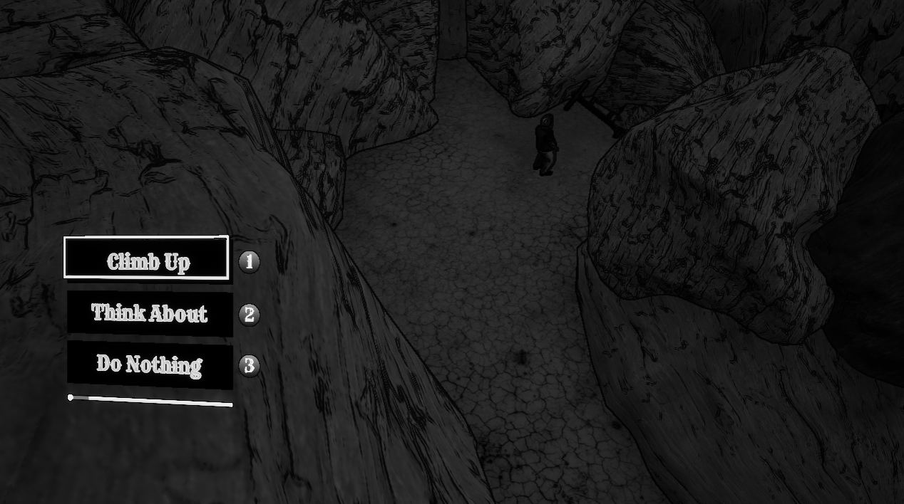
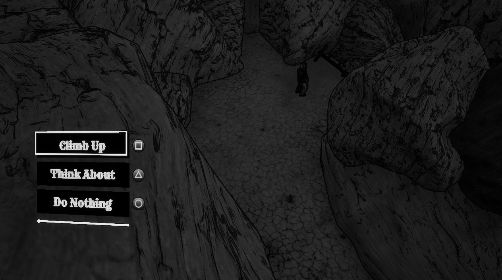
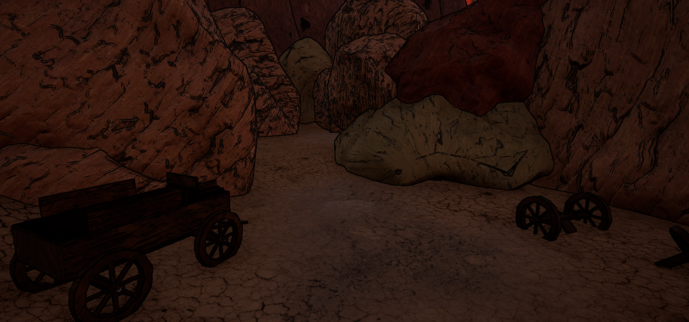
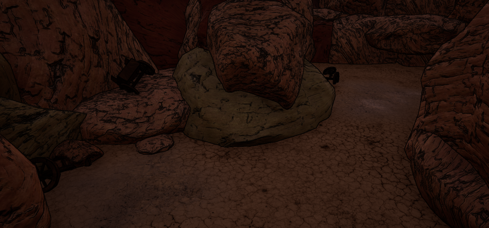
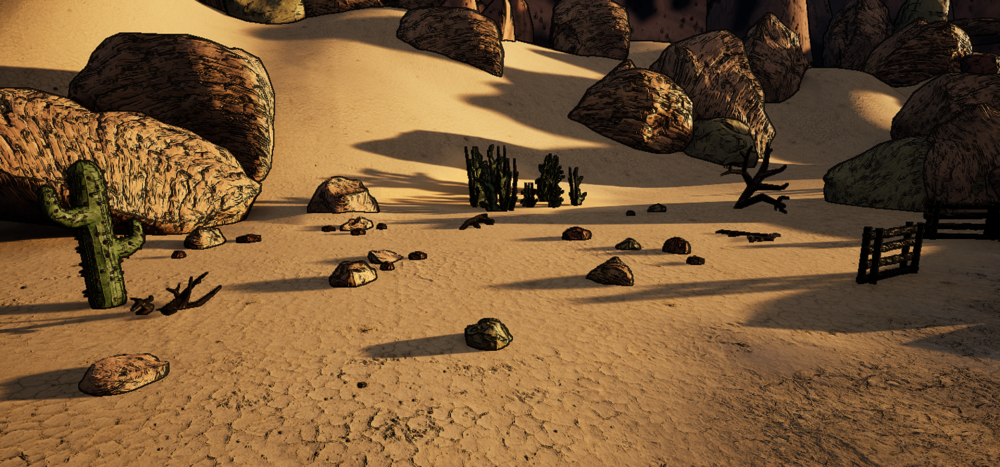
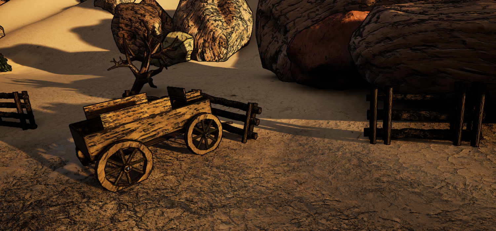
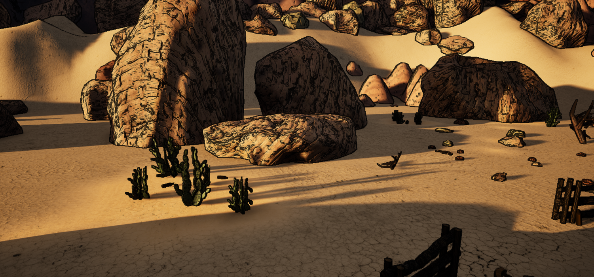
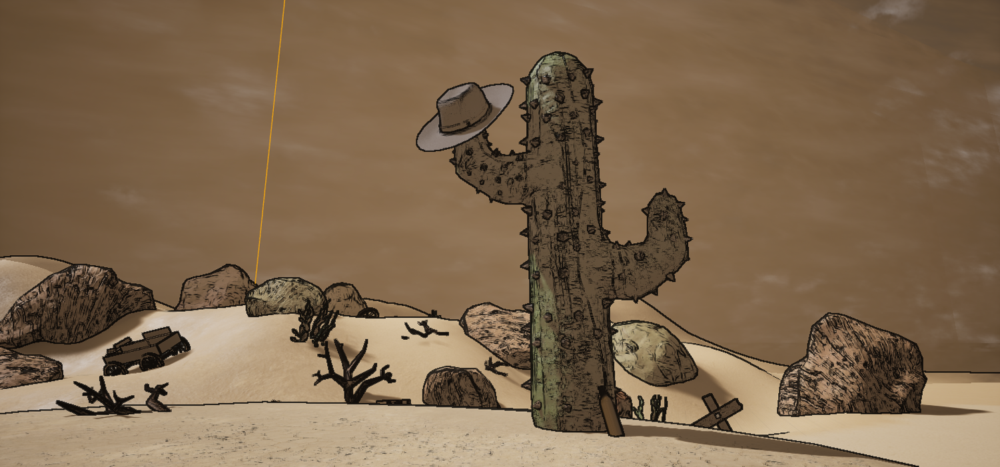
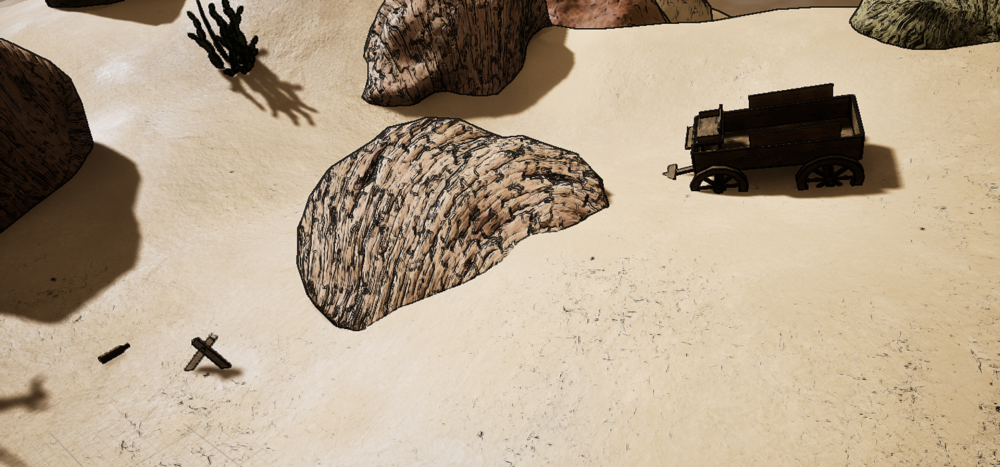
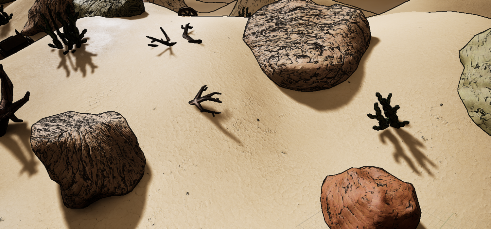
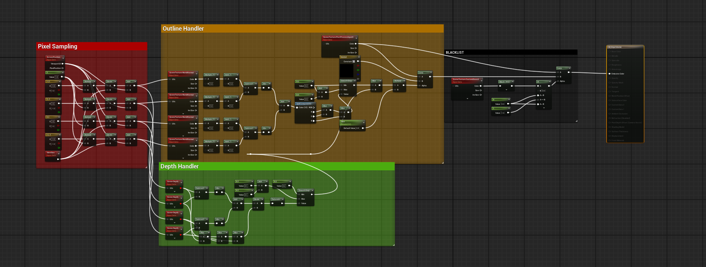
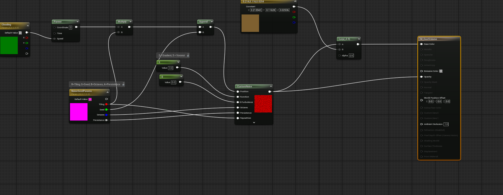
I promise I'll get the next devlog out in at most a month.